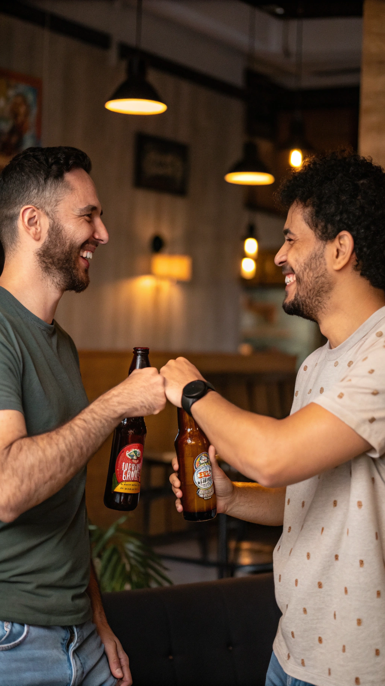
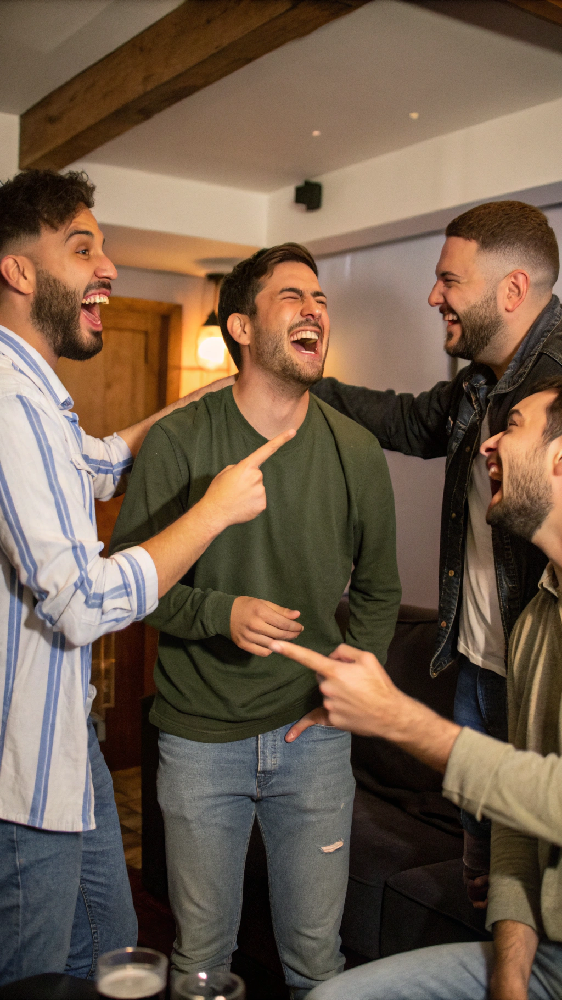
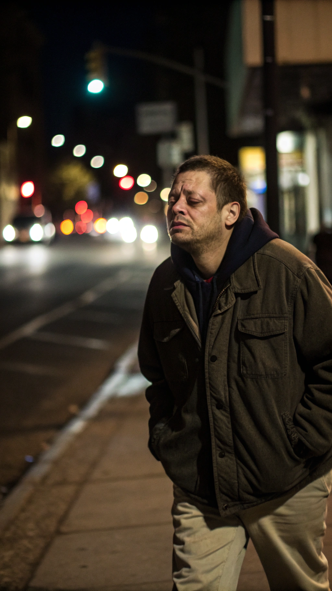
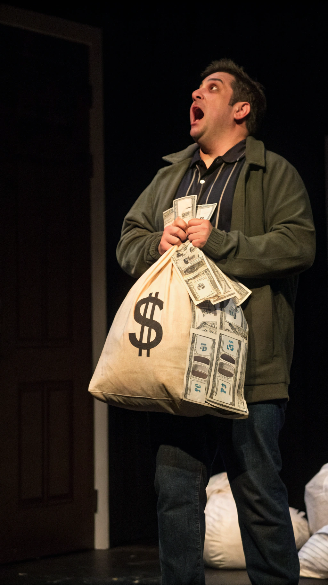
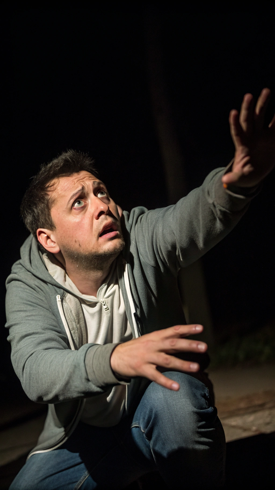
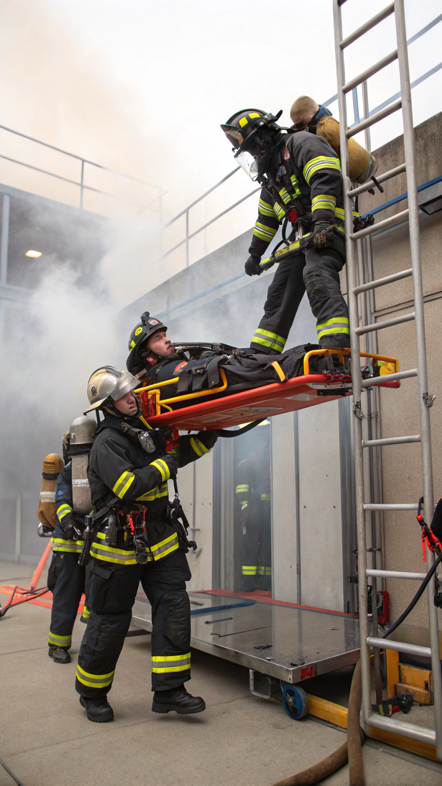
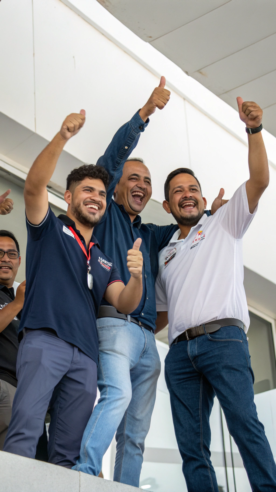

Wir klären heute das größte Missverständnis der Geschichte: Warum ist es nicht schwul, einem Kumpel einen zu lutschen?

Es geht nur um echte Freundschaft und Vertrauen. Schließlich teilen wir auch schon seit Jahren unsere Bierflaschen!
In Extremsituationen ist alles erlaubt. Stell dir vor, es gibt nichts anderes zu essen - da zählt nur das Überleben!

Es geht um Ehre und Respekt! Wer sich nicht traut, ist ein Feigling und wird gnadenlos gecancelt.

Nach der zehnten Bierflasche ist einfach alles egal. Da kann schon mal was durcheinanderkommen.
In manchen Ländern ist das völlig normal und Ausdruck von Freundschaft. Wir müssen tolerant sein!

Manchmal steht einfach zu viel auf dem Spiel. Für einen sechsstelligen Betrag würdest du auch über deinen Schatten springen!

Ohne Licht kann schon mal der falsche Zapfhahn erwischt werden. Das passiert den Besten von uns!

Man weiß nie, wann man das im Ernstfall braucht. Es ist wie ein Feuerwehr-Einsatz: Sicher ist sicher!

Einem Kumpel einen zu lutschen ist definitiv nicht schwul, sondern Ausdruck von Mut, Freundschaft und Überlebenswillen!